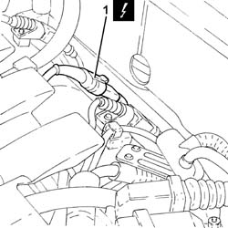
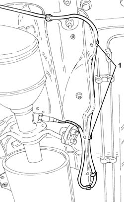
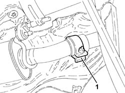
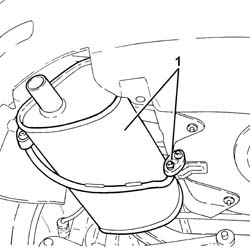
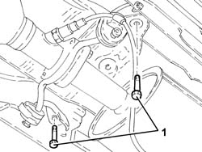
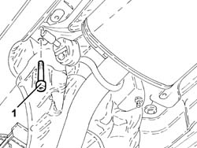
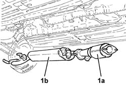

1076B12 EXHAUST PIPE ASSEMBLY R+R EMISSION CONTROL VERSIONS
- Path
- Procedures > 10 ENGINE UNIT > 1076 EXHAUST PIPES AND SILENCERS > 1076B EXHAUST PIPES AND SILENCERS > 1076B12 EXHAUST PIPE ASSEMBLY R+R EMISSION CONTROL VERSIONS
- Kind
- repair procedure (removal / refitting; the operation number is the code)
- Applies to
- engines: 1.8 T.SPARK; all production periods
- Interactive page
- https://sloeber94.github.io/elrnDB-aGt/en/#/125001112
Applies to: engines: 1.8 T.SPARK; all production periods
 Removing
Removing
 Refitting
RefittingPosition the vehicle on a lift.
Make sure that the ignition key is in the OFF position, then disconnect the negative battery terminal (-).
Description | Connector | |
|---|---|---|
- | Battery | Vedere A1B BATTERIA ( CABLAGGI ) |
Proceed with the removal
Op. 1072C44 EXHAUST MANIFOLD HEAT SHIELD ON BULKHEAD - R+R.
Proceed with the removal
Op. 1080B40 CATALYTIC PRE-CONVERTER - R R.
1. Disconnect the electrical connection for the Lambda sensor.
Description | Connector | |
|---|---|---|
1 | Lambda sensor downstream of the post-converter | Vedere K17 SONDA LAMBDA A VALLE DEL POST-CATALIZZATORE ( MOTORE ) |

Applies to: engines: 1.8 T.SPARK; all production periods
1. Release the lambda sensor electrical wiring from the fastenings.

Applies to: engines: 1.8 T.SPARK; all production periods
1. Loosen the collar connecting the intermediate exhaust silencer to the rear exhaust silencer.

Applies to: engines: 1.8 T.SPARK; all production periods
1. Remove the rear exhaust silencer after releasing it from the flexible mounts and the intermediate exhaust silencer.

Applies to: engines: 1.8 T.SPARK; all production periods
1. Unscrew the bolts securing the catalytic converter brackets.

Applies to: engines: 1.8 T.SPARK; all production periods
1. Undo the bolt fixing the intermediate exhaust silencer front flexible mount.

Applies to: engines: 1.8 T.SPARK; all production periods
1. Remove catalytic converter (1a) and intermediate exhaust silencer (1b) after releasing from the remaining flexible mount.

Applies to: engines: 1.8 T.SPARK; all production periods
Refitting
RemovingRefit the catalytic converter and intermediate exhaust silencer in their seats and secure to the flexible mount.
Tighten the bolt fixing the intermediate exhaust silencer front flexible mount.
Tighten the bolts securing the catalytic converter flexible brackets.
Refit the rear exhaust silencer, connected to the intermediate exhaust silencer and secure with the flexible mounts.
Tighten the collar connecting the intermediate exhaust silencer to the rear exhaust silencer.
Secure the lambda sensor electrical wiring to the fastenings.
Connect the electrical connection for the Lambda sensor.
Proceed with the refitting
Op. 1080B40 CATALYTIC PRE-CONVERTER - R R.
Proceed with the refitting
Op. 1072C44 EXHAUST MANIFOLD HEAT SHIELD ON BULKHEAD - R+R.
Connect the negative battery terminal (-).
Remove the vehicle from the lift.